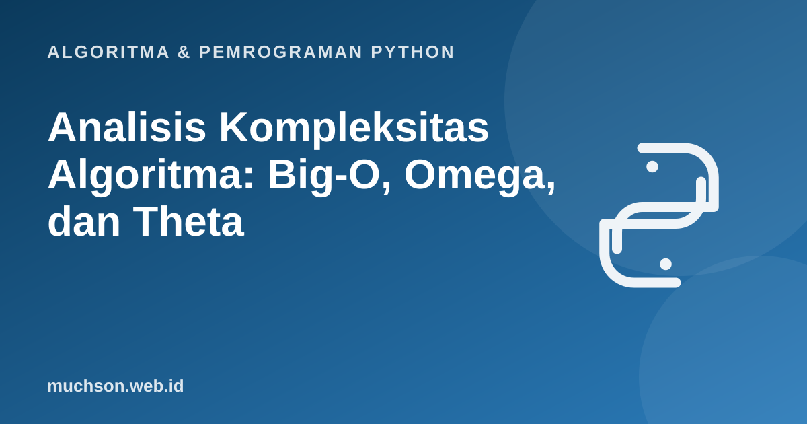

Beranda › Artikel › Algoritma & Pemrograman Python
Algoritma & Pemrograman PythonAnalisis Kompleksitas Algoritma: Big-O, Omega, dan Theta
Dua algoritma bisa sama-sama benar tetapi satu selesai dalam sedetik dan yang lain dalam sejam. Analisis kompleksitas adalah alat untuk memprediksi perilaku itu sebelum menjalankan apa pun, dan untuk membandingkan rancangan secara adil tanpa terpengaruh kecepatan komputer. Materi ini membangun definisinya dari hitungan langkah, bukan hafalan tabel.
Sebaiknya sudah paham: perulangan bersarang, rekursi dasar, fungsi

Setelah membaca dan mencoba materi ini, Anda mampu:
- menghitung jumlah operasi dasar sebuah algoritma sebagai fungsi dari n
- menjelaskan notasi O, Ω, dan Θ beserta artinya
- menentukan kelas kompleksitas dari perulangan tunggal, bersarang, dan pembagian dua
- membedakan kasus terbaik, rata-rata, dan terburuk
- menyusun dan menyelesaikan relasi rekurensi sederhana
- membedakan kompleksitas waktu dan ruang
Langkah 1: hitung operasi dasar, bukan detik
Waktu nyata bergantung pada perangkat keras, bahasa, dan beban sistem. Karena itu kita menghitung operasi dasar (perbandingan, penugasan, aritmetika) sebagai fungsi dari ukuran masukan n. Mari hitung manual lalu verifikasi dengan program.
def cari_maks(data):
maks = data[0] # 1 penugasan
for x in data[1:]: # n-1 putaran
if x > maks: # 1 perbandingan per putaran
maks = x # 0..1 penugasan per putaran
return maks
def cacah(n):
# menghitung jumlah perbandingan yang sebenarnya
perbandingan = 0
for _ in range(n - 1):
perbandingan += 1
return perbandingan
for n in [10, 100, 1000]:
print(n, "elemen ->", cacah(n), "perbandingan")10 elemen -> 9 perbandingan
100 elemen -> 99 perbandingan
1000 elemen -> 999 perbandingan
Notasi asimtotik
Notasi asimtotik menggambarkan perilaku fungsi untuk n yang besar, mengabaikan konstanta dan suku yang tidak dominan.
| Notasi | Makna informal | Definisi formal (ringkas) |
|---|---|---|
| O(g(n)) | Batas atas: tumbuh tidak lebih cepat dari g | Ada c, n₀ sehingga f(n) ≤ c · g(n) untuk semua n ≥ n₀ |
| Ω(g(n)) | Batas bawah: tumbuh setidaknya secepat g | Ada c, n₀ sehingga f(n) ≥ c · g(n) untuk semua n ≥ n₀ |
| Θ(g(n)) | Batas ketat: tumbuh sama cepat dengan g | f(n) adalah O(g(n)) sekaligus Ω(g(n)) |
f(n) = 3n² + 10n + 5 ⇒ f(n) = Θ(n²)
Mengapa? Untuk n besar, suku 3n² mendominasi. Buktikan batas atas: untuk n ≥ 10, 10n ≤ n² dan 5 ≤ n², sehingga f(n) ≤ 3n² + n² + n² = 5n². Pilih c = 5 dan n₀ = 10; maka f(n) ∈ O(n²). Batas bawah: f(n) ≥ 3n² untuk semua n ≥ 1, sehingga f(n) ∈ Ω(n²).
Dalam percakapan sehari-hari, orang sering menyebut "Big-O" untuk semua kasus. Secara ketat, O adalah batas atas. Bila Anda ingin menyatakan bahwa sebuah algoritma pasti berkelas tepat n², gunakan Θ(n²).
Pertumbuhan yang perlu dihafal secara visual
Cara menentukan kelas kompleksitas
| Pola kode | Kompleksitas | Alasan |
|---|---|---|
| Pernyataan tunggal | O(1) | Jumlah langkah tidak bergantung n |
| Satu perulangan 1..n | O(n) | n putaran × O(1) |
| Dua perulangan bersarang 1..n | O(n²) | n × n |
| Perulangan bersarang, dalam bergantung i | O(n²) | 1 + 2 + ... + n = n(n+1)/2 |
| Variabel dikali atau dibagi 2 tiap putaran | O(log n) | Berhenti setelah log₂ n putaran |
| Perulangan n kali, di dalamnya log n | O(n log n) | Perkalian |
| Dua perulangan berurutan | O(n) + O(m) | Dijumlah, ambil yang dominan |
def hitung_langkah(n):
"""Menghitung berapa kali badan perulangan berjalan."""
a = b = c = 0
for i in range(n): # O(n)
a += 1
for i in range(n): # O(n^2)
for j in range(n):
b += 1
k = n
while k > 1: # O(log n)
k //= 2
c += 1
return a, b, c
for n in [8, 64, 1024]:
print(n, hitung_langkah(n))8 (8, 64, 3)
64 (64, 4096, 6)
1024 (1024, 1048576, 10)
Kasus terbaik, rata-rata, dan terburuk
Banyak algoritma tidak selalu butuh waktu yang sama untuk ukuran masukan yang sama. Pencarian linear mencari nilai 7 dalam daftar:
def cari_linear(data, target):
langkah = 0
for i, x in enumerate(data):
langkah += 1
if x == target:
return i, langkah
return -1, langkah
data = list(range(1, 1001))
print("terbaik (di awal) :", cari_linear(data, 1)[1], "langkah")
print("rata-rata (tengah) :", cari_linear(data, 500)[1], "langkah")
print("terburuk (di akhir):", cari_linear(data, 1000)[1], "langkah")
print("terburuk (tak ada) :", cari_linear(data, 5000)[1], "langkah")terbaik (di awal) : 1 langkah
rata-rata (tengah) : 500 langkah
terburuk (di akhir): 1000 langkah
terburuk (tak ada) : 1000 langkah
| Kasus | Pencarian linear | Arti |
|---|---|---|
| Terbaik | Θ(1) (target di awal) | Masukan paling menguntungkan |
| Rata-rata | Θ(n) | Dengan asumsi distribusi tertentu, biasanya posisi seragam |
| Terburuk | Θ(n) | Jaminan batas atas untuk semua masukan |
Rekurensi: kompleksitas algoritma rekursif
Algoritma rekursif dianalisis dengan relasi rekurensi. Binary search membagi dua ukuran masalah dan melakukan kerja konstan: T(n) = T(n/2) + c. Merge sort membagi dua, menyelesaikan kedua bagian, lalu menggabung dalam waktu linear: T(n) = 2T(n/2) + cn.
| Rekurensi | Penyelesaian | Contoh |
|---|---|---|
| T(n) = T(n - 1) + c | Θ(n) | Faktorial rekursif |
| T(n) = T(n/2) + c | Θ(log n) | Binary search |
| T(n) = 2T(n/2) + cn | Θ(n log n) | Merge sort |
| T(n) = T(n - 1) + cn | Θ(n²) | Quick sort kasus terburuk |
| T(n) = 2T(n - 1) + c | Θ(2ⁿ) | Fibonacci rekursif naif |
Penyelesaian dapat dibuktikan dengan metode substitusi, pohon rekursi, atau Teorema Master untuk bentuk T(n) = aT(n/b) + f(n). Pembuktiannya dibahas di buku CLRS dan kuliah MIT 6.006.
Kompleksitas ruang
Selain waktu, algoritma memakai memori tambahan. Membalik list dengan membuat list baru memakai O(n) ruang; membalik di tempat memakai O(1). Rekursi juga memakan ruang pada call stack: kedalaman n berarti O(n).
def balik_baru(data): # ruang tambahan O(n)
return data[::-1]
def balik_di_tempat(data): # ruang tambahan O(1)
i, j = 0, len(data) - 1
while i < j:
data[i], data[j] = data[j], data[i]
i, j = i + 1, j - 1
return data
print(balik_baru([1, 2, 3, 4]), balik_di_tempat([1, 2, 3, 4]))[4, 3, 2, 1] [4, 3, 2, 1]
1. Tentukan kompleksitas: for i in range(n): for j in range(i, n): x += 1.
2. Tentukan kompleksitas: i = 1
while i < n:
i *= 3.
3. Sebuah algoritma membutuhkan 5n + 20 langkah dan lainnya 0,01n². Mana yang lebih baik untuk n kecil dan mana untuk n besar?
4. Mengapa f(n) = n log n termasuk O(n²) tetapi tidak Θ(n²)?
- Hitung operasi dasar sebagai fungsi dari n, bukan waktu dalam detik.
- O = batas atas, Ω = batas bawah, Θ = batas ketat; abaikan konstanta dan suku yang tidak dominan.
- Perulangan bersarang mengalikan, perulangan berurutan menjumlah, pembagian dua menghasilkan log n.
- Rekurensi menggambarkan algoritma rekursif: T(n) = 2T(n/2) + n menghasilkan n log n.
- Pertimbangkan juga kasus terburuk dan kompleksitas ruang.
Tanya jawab
Mengapa konstanta diabaikan padahal berpengaruh pada waktu nyata?
Apakah O(n) selalu lebih cepat dari O(n²)?
Apa itu analisis amortisasi?
Referensi
- Cormen, Leiserson, Rivest, Stein, Introduction to Algorithms (edisi ke-4, MIT Press, 2022)
- Anany Levitin, Introduction to the Design and Analysis of Algorithms (buku teks)
- MIT OpenCourseWare 6.006: Introduction to Algorithms
- Robert Sedgewick dan Kevin Wayne, Algorithms (edisi ke-4), materi pendamping algs4.cs.princeton.edu
- Python Wiki: TimeComplexity